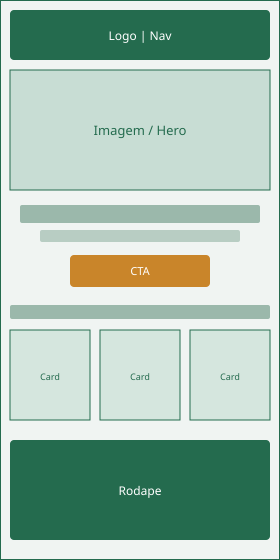

Nome do Site
O nome escolhido para o projeto é Pet Shop Amigo Fiel. Ele comunica cuidado e confiança para tutores de animais em Brasília. “Amigo Fiel” reforça a ideia de companheirismo entre pets e donos, algo alinhado a um pet shop que oferece produtos e serviços de banho e tosa.
Domínio sugerido (opcional): amigofiel.com.br
Finalidade do Site
O site apresentará o pet shop Amigo Fiel e ajudará tutores a conhecer produtos, serviços e formas de contato. Ele fornecerá:
- Informações sobre o pet shop, localização e diferenciais;
- Lista de produtos (ração, brinquedos, acessórios) e serviços (banho, tosa, consulta);
- Formulário de contato ou agendamento para dúvidas e reservas.
Cenários
Perguntas típicas do público-alvo (tutores de animais em Brasília):
- Quais serviços de banho e tosa o Amigo Fiel oferece e quanto custam?
- Como agendo um horário ou peço informações sobre ração para o meu pet?
- O pet shop fica em qual região de Brasília e quais são os horários de funcionamento?
Esquema de Cores
Foram definidas quatro cores principais para a identidade do site:
Verde (#246b4e)
Cabeçalhos, rodapé, títulos e elementos de navegação.
Âmbar (#c9852a)
Botões de ação (CTA), destaques e sublinhado de títulos.
Verde claro (#eef4f1)
Cor de fundo das páginas.
Carvão (#24312c)
Texto de parágrafos e listas.
Tipografia
Foram escolhidas duas fontes do Google Fonts:
- Baloo 2 — usada em títulos (h1, h2, h3) e na marca do site, para transmitir um visual acolhedor e amigável.
- Nunito — usada no corpo do texto (parágrafos, listas e rodapé), por ser legível e confortável em blocos longos.
Exemplo de título com Baloo 2
Exemplo de parágrafo com Nunito: o Amigo Fiel cuida do seu pet com carinho.
Wireframes
Esboços da página inicial do projeto: um para visualização móvel e outro para janelas de visualização maiores (desktop).
